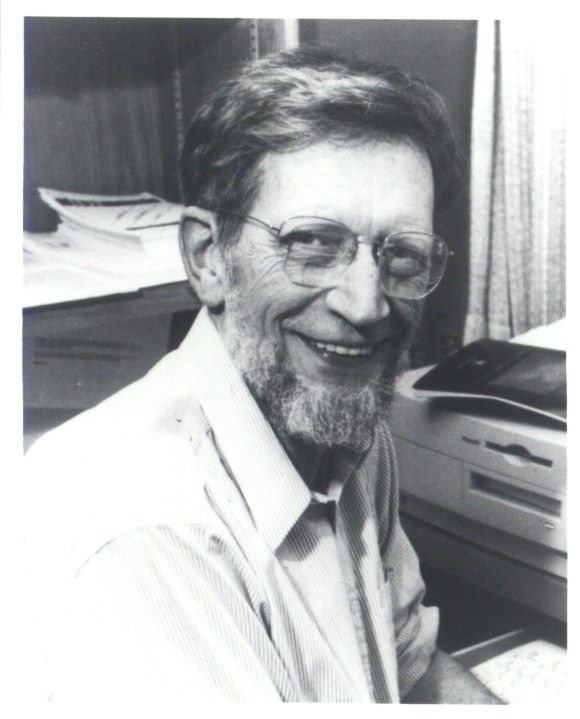

Philosophy of Religion is the philosophical study of religion,
religious belief, religious experience, concepts of God or ultimate
reality, faith, reason, revelation, morality, suffering, religious
diversity, and the possibility of knowledge about transcendent
reality. It asks whether religious beliefs can be rationally
justified, what religious claims mean, and how competing religious and
non-religious worldviews should be evaluated.
What Is Philosophy of Religion?
Philosophy of Religion is a branch of philosophy that critically
examines religious beliefs, concepts, arguments, practices, and
experiences. It does not require the philosopher to begin by accepting
or rejecting religion. Instead, it investigates whether religious claims
are coherent, what reasons can be offered for or against them, and what
can reasonably be known about God, gods, ultimate reality, or
transcendent dimensions of existence. The field therefore examines
questions about religious belief without treating faith or disbelief as
a philosophical conclusion in advance.
Does God exist? Philosophy of Religion examines
arguments for and against the existence of God, gods, or an ultimate
transcendent reality.
What can be meant by God? Philosophers examine
concepts such as omnipotence, omniscience, perfect goodness, eternity,
transcendence, necessity, and divine simplicity.
Can religious belief be rational? The field asks
whether belief in God or other religious claims requires decisive
proof or can be rationally supported by evidence, experience,
testimony, or other forms of justification.
Can religious experience provide knowledge?
Philosophers investigate whether experiences described as encounters
with God, the divine, or ultimate reality can provide evidence for
religious belief.
Can religious language describe transcendent reality?
Questions arise about whether statements concerning God, creation,
revelation, prayer, and salvation can be literally meaningful or
require symbolic, analogical, metaphorical, or other forms of
interpretation.
The field is broader than the philosophical study of God alone.
Philosophers of religion investigate concepts such as creation,
revelation, prayer, immortality, salvation, transcendence, sacredness,
evil, miracles, religious experience, religious practice, and ultimate
reality. They also examine atheism, agnosticism, naturalism, secularism,
and non-theistic approaches to religion. Important questions therefore
extend beyond whether a deity exists and include how religious
worldviews understand human existence, morality, suffering, death,
knowledge, freedom, and the possibility of meaning.
Creation and the universe: Does the universe require
a creator or ultimate explanation, and what would creation mean
philosophically?
Revelation: Can a divine being reveal truths to human
beings, and how could revelation be distinguished from human
interpretation or error?
Prayer and religious practice: What does prayer mean,
and is prayer compatible with divine foreknowledge, providence, or an
unchanging conception of God?
Evil and suffering: How can the existence of
apparently pointless suffering be reconciled with the existence of an
omnipotent and perfectly good God?
Miracles: Are violations or suspensions of ordinary
natural processes philosophically possible, and what kind of evidence
could justify belief in a miracle?
Death and the afterlife: Can personal existence
continue after bodily death, and what would be required for
resurrection, reincarnation, immortality, or another form of
post-mortem existence?
Religious alternatives: How should theism, atheism,
agnosticism, deism, naturalism, and non-theistic religious positions
be philosophically compared?
Philosophy of Religion is also closely connected with several major
areas of philosophy. Questions about God's existence, creation,
necessity, causation, time, eternity, and ultimate reality are closely
related to metaphysics. Questions about faith, evidence, revelation,
testimony, religious experience, and disagreement belong to
epistemology. Questions about divine commands, moral obligation, evil,
suffering, and the foundations of morality connect Philosophy of
Religion with ethics. Questions about religious statements, sacred
texts, metaphor, analogy, and interpretation connect it with philosophy
of language and hermeneutics. Questions concerning consciousness,
personal identity, and the possibility of an immaterial soul also
connect the field with philosophy of mind.
Metaphysics: Examines God, ultimate reality,
creation, causation, necessity, possibility, time, eternity, and the
nature of existence.
Epistemology: Examines whether religious beliefs can
be justified and what counts as evidence or knowledge in religious
contexts.
Ethics: Examines the relationship between God,
morality, moral obligation, human responsibility, suffering, and the
good life.
Philosophy of Language: Examines the meaning and
intelligibility of theological and religious claims.
Philosophy of Mind: Examines consciousness, the soul,
personal identity, religious experience, and the possibility of
non-physical aspects of human existence.
Philosophy of Science: Examines the relationship
between religious explanations and scientific accounts of the
universe, life, human origins, and natural phenomena.
Philosophy of Religion is also increasingly comparative and global.
Philosophical reflection on religion developed in many intellectual
traditions, including Greek philosophy, Indian philosophy, Buddhist
philosophy, Islamic philosophy, Jewish philosophy, Christian philosophy,
and Chinese thought. These traditions do not all ask religious questions
in the same conceptual vocabulary or assume the same understanding of
God, self, reality, salvation, or religious knowledge. A serious
philosophy of religion therefore studies both similarities and
fundamental differences between traditions rather than treating religion
as a single universal worldview.
Greek philosophy: Philosophical reflection on the
gods, divine reality, causation, the soul, virtue, and the highest
good appears in thinkers such as Plato and Aristotle.
Indian philosophy: Hindu, Buddhist, Jain, and other
traditions developed extensive philosophical debates about ultimate
reality, consciousness, karma, liberation, the self, and religious
knowledge.
Buddhist philosophy: Many Buddhist traditions
investigate suffering, impermanence, dependent origination,
consciousness, and liberation without requiring belief in a creator
God.
Islamic philosophy: Muslim philosophers and
theologians developed influential arguments concerning God, creation,
causation, divine attributes, revelation, reason, and the relationship
between philosophy and religious knowledge.
Jewish philosophy: Jewish philosophical traditions
have examined divine unity, creation, revelation, law, prophecy,
interpretation, and the relationship between philosophical reason and
religious tradition.
Christian philosophy: Christian thinkers developed
major philosophical discussions concerning God, creation, Trinity,
incarnation, evil, free will, faith, reason, and the relationship
between theology and philosophy.
Comparative philosophy of religion: Contemporary
philosophy increasingly compares different religious and non-religious
worldviews while examining religious diversity, disagreement,
pluralism, and competing conceptions of ultimate reality.
A central feature of the discipline is philosophical neutrality about
its conclusions. A philosopher of religion may be a theist, atheist,
agnostic, deist, religious pluralist, or defender of a non-theistic
religious worldview. Philosophy of Religion does not require a
particular personal religious commitment; instead, it evaluates
positions according to philosophical standards such as conceptual
clarity, logical coherence, explanatory power, evidential support, and
responsiveness to serious objections. This makes the discipline an open
field of inquiry in which both religious and non-religious positions can
be subjected to rigorous philosophical analysis.
Theism: The view that one or more gods exist, with
different traditions offering different accounts of divine reality.
Atheism: Positions that reject belief in God or deny
that the available reasons justify belief in a deity.
Agnosticism: Positions that emphasize uncertainty or
suspension of judgment concerning whether God or ultimate religious
realities exist.
Deism: A conception of God associated with creation
and rational order in which divine involvement in the world may be
understood differently from traditional theism.
Religious pluralism: Philosophical approaches that
take seriously the possibility that different religious traditions may
contain genuine insights into ultimate reality.
Non-theistic religious philosophies: Traditions and
philosophical positions that address religious questions concerning
suffering, liberation, morality, consciousness, or ultimate reality
without requiring a creator God.
Core Questions in Philosophy of Religion
Philosophy of Religion begins with questions that arise from humanity's
attempt to understand ultimate reality, religious belief, and the
possible existence of a divine or transcendent dimension of reality.
Rather than assuming that religious claims are true or false,
philosophers examine the arguments, concepts, assumptions, and
experiences involved in religious belief. Some of the central questions
include:
Does God exist? What philosophical arguments can be
given for or against the existence of God, gods, or another ultimate
reality?
Why is there something rather than nothing? Does the
existence of the universe require a first cause, necessary
explanation, or transcendent ground of being?
Is the universe created or eternal? Can philosophical
reasoning determine whether the cosmos had a beginning, or whether an
eternal universe is metaphysically possible?
Is there a transcendent reality? Could reality
contain aspects that cannot be reduced to the physical or natural
world?
What is the nature of God? What could it mean to
describe God as omnipotent, omniscient, perfectly good, eternal,
necessary, immutable, or transcendent?
Can God's attributes be understood consistently? Can
divine omniscience, omnipotence, perfect goodness, eternity, and
freedom coherently belong to the same being?
Can consciousness point beyond the physical world?
Does the existence of subjective experience, consciousness, or
rational thought provide any philosophical reason to believe in a
non-physical reality?
Does morality require God? Are objective moral values
dependent upon divine commands, divine nature, or can moral truths
exist independently of religion?
Philosophy of Religion also examines the nature and rationality of
religious belief. A central issue is whether people can reasonably
believe in God or other religious realities without possessing deductive
proof. Philosophers therefore distinguish between proof, evidence,
justification, faith, testimony, revelation, and religious experience.
Questions about religious belief include:
What is faith? Is faith a form of belief, trust,
commitment, knowledge, or something fundamentally different from
ordinary belief?
Can faith be rational without proof? Must religious
belief satisfy the same evidential standards as scientific or ordinary
empirical beliefs?
Can religious experience provide evidence for God?
Can experiences described as encounters with God, the divine, or
ultimate reality provide rational grounds for religious belief?
Can revelation constitute knowledge? If a person
believes that a truth has been revealed by God, what would justify
accepting that revelation as genuine?
What makes a religious belief justified? Can
religious beliefs be properly basic, or must they depend upon
arguments and evidence?
What role does religious testimony play? Can the
testimony of religious communities, teachers, scriptures, or witnesses
provide rational grounds for belief?
Can religious belief be based on personal experience?
What distinguishes a genuine religious experience from psychological,
emotional, cultural, or natural explanations?
What happens when evidence is uncertain? How should
believers and non-believers reason when arguments for and against
religious claims remain disputed?
Another major group of questions concerns the coherence of religious
concepts and the apparent conflict between divine attributes and
features of the world. These problems are especially important because
Philosophy of Religion does not merely ask whether people believe
something; it asks whether the beliefs and concepts involved can be made
philosophically coherent. Important problems include:
The problem of evil: Can an all-powerful and
perfectly good God exist in a world containing suffering, injustice,
and apparently pointless evil?
The problem of divine hiddenness: Why might a
perfectly loving God remain hidden from sincere people who genuinely
seek evidence of the divine?
Divine foreknowledge and free will: If God infallibly
knows what a person will do, in what sense can that person remain
free?
Divine timelessness: If God is outside time, how can
God act, respond to prayers, create a temporal universe, or enter into
relationships with temporal beings?
Divine omnipotence: What does it mean for God to be
all-powerful, and are there logically impossible actions that even an
omnipotent being cannot perform?
Divine omniscience: What does perfect knowledge
involve, and can complete divine knowledge coexist with genuine human
freedom?
Divine goodness: Is God's goodness identical with
God's commands, grounded in God's nature, or independent of God?
Necessity and contingency: Is God a necessary being,
and could the universe or other aspects of reality have failed to
exist?
Philosophy of Religion finally connects these questions with broader
philosophical disciplines. Questions about God's existence, causation,
necessity, possibility, creation, and the nature of reality belong
closely to metaphysics. Questions about faith, evidence, testimony,
religious experience, disagreement, and justification belong to
epistemology. Divine goodness, moral obligation, suffering, and the
relationship between God and morality connect the field with ethics,
while religious language, interpretation, and the meaning of theological
statements connect it with philosophy of language and hermeneutics. This
makes Philosophy of Religion an interdisciplinary field that brings
together several major areas of philosophical inquiry.
Metaphysics:
What is ultimate reality, and does God or another transcendent reality
exist?
Epistemology:
How can human beings acquire, justify, or evaluate religious knowledge
and belief?
Ethics:
What is the relationship between God, morality, moral obligation,
suffering, and the good life?
Philosophy of Language:
What do religious statements mean, and can language meaningfully
describe God or transcendent reality?
Philosophy of Mind:
What is consciousness, and could human consciousness have a spiritual
or non-physical dimension?
Philosophy of Science:
How should religious explanations be related to scientific
explanations of nature, the universe, life, and human origins?
Philosophy of History:
How should claims about revelation, religious development, sacred
history, and historical religious events be evaluated?
Political Philosophy:
What is the relationship between religion, political authority,
religious freedom, secularism, and public life?
Religion and Ultimate Reality
Many religious traditions distinguish ordinary or conditioned reality
from an ultimate reality that provides the deepest explanation,
foundation, or meaning of existence. In theistic traditions, ultimate
reality may be understood as God or the divine, while other traditions
describe ultimate reality through concepts such as Brahman, emptiness,
the unconditioned, or other forms of transcendence. These concepts raise
fundamental metaphysical questions about what is ultimately real,
whether reality has a necessary foundation, and whether the visible
world depends upon something beyond itself. Philosophy of Religion
examines these claims by asking whether particular conceptions of
ultimate reality are coherent, intelligible, and philosophically
defensible.
The idea of ultimate reality also raises questions about the
relationship between the finite and the infinite, the contingent and the
necessary, and the natural and the transcendent. If the universe is not
self-explanatory, one possibility is that its existence depends upon a
necessary reality. If reality is ultimately natural, philosophers may
instead ask whether the physical universe itself can serve as the
fundamental level of explanation. These questions overlap with
metaphysics, especially debates about necessary existence, causation,
dependence, contingency, substance, existence, and the principle of
sufficient reason.
Religious traditions do not offer a single account of ultimate reality.
Classical theism understands God as distinct from creation, while
pantheistic approaches identify God with the totality of reality and
panentheistic approaches understand the world as existing within God
while not exhausting the divine. Some Hindu philosophical traditions
identify ultimate reality with Brahman, whereas Buddhist philosophical
traditions often reject the assumption that reality must be grounded in
a permanent creator or ultimate substance. These differences demonstrate
why the philosophical study of religion must examine multiple
conceptions of ultimacy rather than treating religion as synonymous with
belief in a creator God.
The question of ultimate reality also concerns whether human beings can
possess adequate knowledge of what is ultimate. If ultimate reality
transcends ordinary experience, then epistemological questions
immediately arise: Can reason discover it? Can religious experience
disclose it? Can revelation provide knowledge of it? Or are claims about
ultimate reality necessarily limited by human concepts and language?
Philosophy of Religion therefore connects metaphysics with epistemology,
philosophy of language, philosophy of mind, and comparative philosophy
in examining how religious traditions understand what is ultimately
real.
Divine Attributes and the Concept of God
Once the existence of God is proposed, Philosophy of Religion must ask
what kind of being God would be. Classical philosophical theology
developed a systematic account of divine attributes intended to describe
divine perfection and distinguish God from finite beings. These
attributes commonly include omniscience, omnipotence, perfect goodness,
eternity, necessary existence, omnipresence, immutability, simplicity,
and freedom. Philosophers ask not only whether these properties are
individually intelligible but also whether they can consistently belong
to the same being.
Divine simplicity and immutability raise particularly deep metaphysical
questions. If God is absolutely simple, can God possess distinct
properties in the same way that ordinary objects do? If God is
immutable, how can God respond to prayers, enter relationships, or act
within a changing world? Similarly, divine eternity can be understood as
everlasting existence through an infinite temporal duration or as a
timeless mode of existence outside ordinary temporal succession. These
debates demonstrate that the concept of God involves much more than
simply affirming the existence of a supernatural person.
The traditional attributes of omnipotence, omniscience, and perfect
goodness also create important philosophical tensions. If God knows
every future event infallibly, philosophers must ask how this knowledge
relates to human freedom. If God is perfectly good and all-powerful, the
existence of severe suffering raises the problem of evil. If God is
omnipotent, philosophers must determine whether omnipotence means the
ability to do absolutely anything or only anything that is logically
possible. Questions about divine attributes therefore connect naturally
with metaphysics, ethics, logic, and the philosophy of action.
Philosophers have also debated whether God should be understood through
personal, impersonal, relational, or more abstract concepts. Classical
theism often describes God as possessing intellect and will, whereas
other religious and philosophical traditions use very different
conceptions of the divine. The philosophical task is consequently both
analytical and comparative: it asks what a particular concept of God
means, whether its attributes are coherent, and what consequences follow
for creation, morality, human freedom, prayer, religious experience, and
the nature of ultimate reality.
Arguments for the Existence of God
One of the most famous areas of Philosophy of Religion concerns
arguments for God's existence. These arguments generally do not function
as universally accepted mathematical proofs. Instead, they attempt to
show that certain features of reality provide evidence for theism, that
belief in God is philosophically reasonable, or that the existence of
God offers a compelling explanation of particular features of the world.
Different arguments begin from different premises, including concepts of
existence, causation, contingency, order, fine-tuning, morality, and
consciousness.
Ontological arguments are primarily concerned with the concept of God,
whereas cosmological arguments reason from the existence or dependence
of the universe and teleological arguments reason from order, purpose,
or apparent design. Moral arguments begin from claims about objective
moral values or obligations. These arguments should not be treated as
identical versions of one general proof because they rely upon different
assumptions and face different philosophical objections. Their
importance lies partly in the way they connect Philosophy of Religion
with metaphysics, epistemology, logic, ethics, and philosophy of
science.
The historical development of these arguments illustrates the diversity
of philosophical approaches to theism. Anselm's ontological argument,
for example, attempts to reason from the concept of a maximally
conceivable being, while Descartes and Leibniz developed related
arguments in different forms. Cosmological reasoning can be traced
through Aristotle, Islamic philosophers such as Avicenna, and medieval
Christian thinkers such as Thomas Aquinas. Later thinkers reformulated
these arguments in response to developments in modern philosophy and
science.
Contemporary versions frequently use probabilistic rather than deductive
reasoning. Fine-tuning arguments, for example, ask whether certain
features of the universe are more expected under theism than under
competing explanations such as physical necessity, chance, or a
multiverse. Likewise, contemporary moral arguments ask whether objective
moral facts are better explained by theism than by secular metaethical
theories. The philosophical evaluation of these arguments therefore
requires examining both their premises and the explanatory alternatives
available to them.
Ontological Arguments
Ontological arguments reason from the concept or definition of God
toward God's existence rather than beginning with empirical observations
about the universe. Anselm famously connected God with the concept of a
being than which none greater can be conceived. Descartes developed a
different form in which necessary existence was connected with the
concept of a supremely perfect being. Kant later argued that existence
is not a real predicate that adds a property to a concept in the
ordinary sense. Contemporary modal versions continue to explore whether
necessary existence follows from particular claims about possibility and
the nature of a maximally great being.
Cosmological Arguments
Cosmological arguments begin from features such as causation,
contingency, motion, dependence, or the existence of the universe
itself. Aristotle's philosophical theology, Avicenna's distinction
between necessary and contingent existence, and Aquinas's arguments from
causation and contingency represent major historical developments.
Modern cosmological arguments may ask why there is something rather than
nothing or whether contingent reality requires a necessary explanation.
Critics debate whether causal principles apply to the universe as a
whole and whether a necessary being would have to be God.
Teleological and Design Arguments
Teleological arguments reason from apparent order, purposiveness,
complexity, biological organization, or cosmic fine-tuning toward some
form of intelligent design. William Paley's watchmaker analogy became a
famous historical example, while contemporary fine-tuning arguments
focus on the apparent sensitivity of certain physical parameters.
Critics argue that natural selection, physical necessity, anthropic
reasoning, or multiverse hypotheses may provide alternative
explanations. The debate therefore concerns comparative explanatory
power rather than simply the observation that nature appears orderly.
Moral Arguments
Moral arguments attempt to connect objective moral values, duties, or
obligations with the existence of God. Some versions argue that a
transcendent moral foundation is required for objective morality, while
critics maintain that moral realism does not necessarily require theism.
Other philosophers argue that God's nature, rather than divine commands
alone, could provide a foundation for moral value. The debate
consequently overlaps with metaethics and asks what, if anything, makes
moral truths objectively binding.
Arguments Against the Existence of God
Philosophy of Religion also evaluates arguments against theism.
Atheistic and agnostic arguments do not all claim that God's existence
has been logically disproved. Some argue that the evidence does not
justify belief, others claim that particular conceptions of God contain
internal contradictions, and still others argue that naturalistic
explanations reduce the need to appeal to supernatural entities. The
philosophical distinction between disproving God's existence and arguing
that belief is unjustified is therefore important.
The strongest objections often target specific versions of theism rather
than every possible concept of the divine. For example, the problem of
evil is directed particularly toward conceptions of God that combine
unlimited power and knowledge with perfect goodness. Similarly, divine
hiddenness focuses on the apparent absence of God from the lives of
sincere nonbelievers. These arguments require careful attention to the
exact attributes being attributed to God and the assumptions made about
what evidence or divine action should be expected.
Naturalism provides another important framework for evaluating religious
explanations. Scientific accounts of biological complexity,
psychological processes, cosmological development, and social behavior
can explain many phenomena that were historically interpreted through
religious concepts. However, the existence of a natural explanation does
not automatically establish atheism. Philosophers continue to debate
whether naturalistic explanations are metaphysically complete and
whether questions concerning existence, consciousness, morality,
rationality, or meaning remain after empirical explanation has been
provided.
Contemporary debates therefore often focus on explanatory comparison,
epistemic probability, and philosophical parsimony rather than simple
opposition between science and religion. The central question may be
whether theism or naturalism provides a more adequate account of the
total evidence. This makes arguments against God part of a broader
philosophical investigation into explanation, evidence, rational belief,
metaphysics, morality, and the limits of human knowledge.
The Problem of Evil
The problem of evil asks how the existence of suffering and apparently
unjustified evil can be reconciled with an omnipotent, omniscient, and
perfectly good God. The logical problem attempts to establish a
contradiction between these claims, while evidential versions argue that
the amount, kinds, or distribution of suffering provide significant
evidence against classical theism. Contemporary discussions generally
distinguish logical compatibility from the question of whether evil
makes God's existence improbable.
The Problem of Divine Hiddenness
Divine hiddenness asks why a perfectly loving God would remain
apparently absent from people who are sincerely open to a relationship
with the divine. The argument connects God's existence with religious
experience, epistemology, divine love, human freedom, and the
possibility of reasonable nonbelief. Philosophers debate whether God's
hiddenness can be explained by divine purposes or whether persistent
nonbelief among sincere seekers is evidence against certain forms of
theism.
Naturalistic Alternatives
Naturalism maintains, broadly, that reality does not require
supernatural entities or explanations. Philosophers have examined
whether cosmology, evolutionary biology, psychology, neuroscience, and
social science can account for phenomena that have traditionally
received religious explanations. Such accounts may challenge particular
religious interpretations without by themselves proving that no divine
reality exists. The deeper philosophical issue is whether a naturalistic
worldview can provide a sufficiently comprehensive account of reality,
knowledge, morality, consciousness, and human existence.
The Problem of Evil and Suffering
The problem of evil is one of the central problems of Philosophy of
Religion because it concerns both philosophical reasoning and the lived
experience of suffering. The question is not simply why unpleasant
events occur, but whether apparently unjustified suffering is compatible
with a God who possesses perfect power, knowledge, and goodness. The
problem has generated centuries of debate concerning divine providence,
human freedom, moral responsibility, natural processes, and the limits
of human knowledge.
Philosophical discussions distinguish several forms of evil and several
different arguments from evil. Some arguments focus on the apparent
logical incompatibility between divine perfection and evil, while others
emphasize the evidential significance of particular cases or patterns of
suffering. The latter approach asks whether there appear to be instances
of suffering for which there is no morally sufficient justification. The
debate is therefore not simply about whether evil exists, but about what
expectations follow from particular concepts of divine goodness, power,
and providence.
Responses to the problem include attempts to identify morally sufficient
reasons God might have for permitting evil. Some emphasize human
freedom, arguing that significant freedom can involve the possibility of
moral evil. Others emphasize character formation, suggesting that
certain virtues can develop only in conditions involving challenge,
vulnerability, or difficulty. Skeptical theism takes a different
approach by questioning whether humans are in a sufficiently informed
epistemic position to judge that apparently gratuitous suffering is
genuinely gratuitous.
The problem also extends beyond abstract argument into questions of
meaning, hope, responsibility, and religious life. A philosophical
response may establish logical compatibility without resolving the
existential impact of suffering. Conversely, religious interpretations
of suffering may provide meaning without constituting a successful
philosophical explanation. The problem of evil therefore remains
important not only for arguments about God's existence but also for
understanding how religious belief responds to tragedy, injustice, and
the limits of human understanding.
Logical and Evidential Evil
The logical problem of evil attempts to establish that certain
conceptions of God and evil cannot coherently coexist. Contemporary
philosophy has generally distinguished this from the evidential problem,
which argues that even if God and evil are logically compatible, the
existence of apparently gratuitous suffering may lower the probability
of God's existence. The distinction is important because answering a
logical argument does not necessarily answer an evidential argument.
Natural and Moral Evil
Moral evil involves suffering caused by the intentional, reckless, or
negligent actions of moral agents, including violence, oppression,
torture, and murder. Natural evil refers to suffering arising from
events not directly caused by human moral agency, such as earthquakes,
disease, congenital conditions, and other natural disasters. This
distinction matters because explanations based on human freedom may
address some forms of moral evil without directly explaining why a world
containing natural suffering would be permitted.
Theodicy and Defense
A theodicy attempts to provide a broader account of why God might permit
evil, whereas a defense generally aims to show that there is no logical
contradiction between God and evil without claiming to know God's actual
reasons. Free-will defenses, soul-making approaches, skeptical theism,
and other strategies illustrate the range of philosophical responses.
Each approach faces different objections concerning freedom, moral
responsibility, excessive suffering, animal suffering, and whether
particular forms of evil can be justified.
Evil, Meaning, and Religious Life
The problem of evil is also existential rather than purely theoretical.
Severe suffering can challenge trust, prayer, hope, religious
commitment, and beliefs about divine providence even when a logical
objection has been answered. Philosophers therefore consider both the
argumentative force of evil and the practical significance of suffering
for religious life. This broader perspective connects Philosophy of
Religion with Ethics, Philosophy of Mind, existential philosophy, and
philosophical approaches to meaning.
Religious Epistemology: Faith, Reason, and Knowledge
Religious epistemology asks whether religious beliefs can constitute
knowledge, rational belief, justified belief, or reasonable commitment.
The central issue is not simply whether religious beliefs are true, but
what standards should be used when evaluating them. Questions about
evidence, justification, testimony, religious experience, revelation,
disagreement, certainty, and rationality make religious epistemology an
important intersection between Philosophy of Religion and general
epistemology.
A major question concerns whether religious belief requires
philosophical argument. Some thinkers have argued that rational belief
in God should be supported by evidence, while others maintain that
religious belief can be rational without being inferred from independent
premises. This produces a spectrum of positions ranging from strong
evidentialism and classical rationalism to forms of fideism and
non-evidentialist epistemology. The debate also raises the broader
question of whether all rational beliefs must have the same kind of
justification.
Religious epistemology also examines the role of testimony and
community. Much of human knowledge depends upon what other people tell
us, including knowledge of history, science, geography, and personal
events. Philosophers therefore ask whether religious testimony should be
treated differently from other forms of testimony and how cultural
background influences religious belief. These questions become
especially significant when different communities provide conflicting
religious testimonies.
The problem of religious disagreement introduces another challenge.
People who appear equally sincere, informed, and intellectually capable
can reach radically different conclusions about God, revelation,
salvation, or ultimate reality. Philosophers disagree about whether such
disagreement should reduce confidence, encourage epistemic humility, or
remain compatible with rational religious commitment. Religious
epistemology consequently addresses not only evidence for belief but
also intellectual responsibility in conditions of deep disagreement.
Faith and Reason
The relationship between faith and reason has produced several competing
philosophical positions. Some traditions emphasize rational argument and
philosophical theology, while others emphasize trust, commitment,
revelation, or religious experience. Fideistic approaches resist the
idea that faith must always be established through philosophical proof,
whereas rationalist approaches seek reasons that can support religious
belief. Contemporary philosophy often treats the relationship as more
complex than a simple opposition between faith and rationality.
Evidentialism
Evidentialist approaches maintain that religious belief should be
supported by appropriate evidence or reasons. The philosophical
challenge is to determine what qualifies as evidence and how strong that
evidence must be. Arguments for God, religious experiences, testimony,
historical claims, revelation, and personal transformation have all been
proposed as possible sources of justification. Critics question whether
the standards used for religious belief should be identical to those
used in scientific or ordinary empirical reasoning.
Reformed Epistemology
Reformed epistemology, associated particularly with Alvin Plantinga,
challenges the assumption that every rational belief must be based on an
argument from publicly accessible evidence. It explores whether belief
in God could be properly basic under suitable epistemic conditions, in a
way that does not require inference from other propositions. The view
does not simply claim that any religious belief is automatically
rational; it raises questions about proper function, epistemic
conditions, defeaters, and the relationship between basic belief and
philosophical argument.
Religious Disagreement
Religious disagreement creates an important epistemological problem
because sincere and intellectually serious people may disagree about
fundamental religious claims. Philosophers ask how an individual should
respond after discovering that others with apparently comparable
intellectual credentials hold incompatible beliefs. Possible responses
include reducing confidence, maintaining one's original position while
recognizing uncertainty, or developing a more pluralistic conception of
rational disagreement. The debate connects religious epistemology with
broader theories of peer disagreement and epistemic humility.
Religious Experience and Revelation
Religious experience has long been treated as a possible source of
knowledge, justification, or transformative understanding. Experiences
described as mystical, transcendent, revelatory, numinous, or
spiritually transformative may be interpreted by believers as encounters
with God, ultimate reality, or a sacred dimension of existence.
Philosophers ask whether these experiences provide rational grounds for
religious belief, whether their interpretation depends upon prior
religious commitments, and whether experiences from different traditions
can all have legitimate epistemic significance.
The epistemological difficulty is that religious experiences are
generally private and interpreted through conceptual frameworks shaped
by culture, language, and prior beliefs. A Christian mystic, Hindu
practitioner, Buddhist meditator, or Muslim believer may describe
experiences using very different theological or metaphysical
vocabularies. This raises questions about whether the differences
concern the same underlying reality or represent fundamentally different
kinds of experience. Philosophers also consider whether the diversity of
reported experiences undermines their evidential value or instead
reveals different interpretations of a deeper phenomenon.
Revelation introduces a related but distinct philosophical question. If
divine or ultimate truth is disclosed to human beings, how can people
determine whether a claimed revelation is genuine? Revelation is
normally mediated through testimony, language, memory, interpretation,
and historical transmission. This means that philosophical questions
about religious revelation inevitably involve epistemology and
philosophy of language, as well as questions concerning authority,
interpretation, and religious tradition.
Psychological and neuroscientific research can investigate the cognitive
conditions associated with religious and mystical experiences. Such
research can contribute important causal explanations of how experiences
arise, but a causal explanation does not automatically settle whether
the experience is veridical. The philosophical issue is whether
explaining the mechanism of an experience undermines its epistemic
justification or whether both causal and epistemic explanations can
coexist. This distinction remains central to contemporary discussions of
religious experience.
Mystical Experience
Mystical experiences are often described in terms of unity,
transcendence, timelessness, altered awareness, loss of ordinary
boundaries, or a sense of direct contact with ultimate reality. William
James famously examined religious experiences partly through their
psychological characteristics and practical consequences. Later
philosophers have debated whether mystical experience should be treated
as analogous to ordinary perceptual experience, as a distinctive
epistemic state, or as a transformative form of consciousness whose
interpretation requires further philosophical argument.
Revelation
Revelation involves the idea that divine or ultimate truth is disclosed
to human beings rather than discovered solely through ordinary
reasoning. Philosophical questions concern whether revelation can be
identified as genuine, how it is transmitted through testimony and
sacred texts, and how competing revelations should be evaluated. The
problem becomes especially significant when different religious
traditions claim access to incompatible revealed truths.
Religious Experience and Natural Explanation
Psychology, cognitive science, and neuroscience can investigate the
mental and neurological conditions associated with religious experience.
These explanations may challenge particular interpretations, but
explaining why an experience occurs does not by itself establish that
its perceived object is unreal. Philosophers therefore distinguish
between causal explanation and epistemic justification. The deeper
question is whether the origin of a religious experience affects the
rational status of the belief formed from it.
Religious Language and Meaning
Religious language creates a distinctive philosophical problem because
many religious claims concern realities that are not ordinary physical
objects. When someone says that God is good, eternal, loving, personal,
or omnipotent, what exactly does the statement mean? Philosophy of
Religion therefore draws heavily on Philosophy of Language, especially
theories of meaning, reference, metaphor, analogy, verification,
interpretation, and context.
The philosophical problem becomes especially difficult when religious
language attributes familiar human properties to a transcendent being.
If divine goodness means exactly the same thing as human goodness,
questions arise about whether God is simply a more powerful moral agent.
If it means something completely different, however, philosophers must
explain how humans can meaningfully speak about God at all. Theories of
analogy, metaphor, symbolic language, and theological predication have
developed in response to this problem.
Modern philosophy also raised questions about whether religious
statements are genuinely truth-apt or cognitively meaningful. Logical
positivists famously argued that meaningful factual statements should
satisfy strict conditions related to empirical verification, creating a
challenge for theological claims that cannot be directly tested through
ordinary observation. Later philosophers rejected or substantially
modified strict verificationism and developed broader theories of
meaning that allowed religious discourse to be understood through its
use, practices, forms of life, and role within communities.
Religious language also includes narrative, ritual, poetry, symbolism,
prayer, myth, metaphor, and sacred imagery. These forms cannot always be
understood adequately by asking whether each statement corresponds
directly to a physical object. Philosophers therefore investigate
whether symbolic and metaphorical language communicates propositions,
shapes perception, expresses existential commitments, or performs
religious functions. The interpretation of religious language
consequently affects how sacred texts, doctrines, rituals, and
theological claims should be understood.
Meaningful Religious Claims
The question of whether religious claims are meaningful became
especially prominent in twentieth-century philosophy. Logical positivism
challenged theological statements that could not be empirically
verified, while later philosophers criticized the assumption that
empirical verification provides the only legitimate standard of meaning.
Other approaches have examined religious language through ordinary use,
religious practice, analogy, narrative, and forms of life. The debate
illustrates the broader philosophical problem of determining what makes
a statement meaningful and truth-evaluable.
Analogy and Religious Predication
Medieval philosophers, especially Thomas Aquinas, developed
sophisticated accounts of how language about God could be meaningful
without treating divine attributes as identical to human attributes.
Analogical predication attempts to explain how terms such as goodness or
wisdom can apply to both God and creatures without having either exactly
the same meaning or completely unrelated meanings. This approach remains
influential in philosophical theology because it addresses the tension
between theological transcendence and meaningful religious discourse.
Symbol, Metaphor, and Religious Meaning
Religious traditions frequently use metaphor, symbol, narrative, ritual
language, poetry, and sacred imagery. Philosophers ask whether these
forms should be understood as indirect ways of expressing literal
propositions, as ways of revealing aspects of reality that literal
language cannot capture, or as practices that shape religious
understanding and identity. These questions are particularly important
when interpreting sacred texts and theological statements whose meaning
may depend heavily upon historical and cultural context.
Religion and Morality
Religion and morality have historically been closely connected, but
Philosophy of Religion asks whether morality actually depends upon
religion. Religious traditions may ground moral obligations in divine
commands, divine nature, cosmic order, liberation, virtue, compassion,
sacred law, or conceptions of human flourishing. Philosophers
investigate whether these foundations are necessary, sufficient, or
philosophically preferable to secular accounts of morality.
The relationship between religion and morality also raises questions
about moral knowledge and motivation. If moral duties are divinely
commanded, how do human beings know what God commands? If moral truths
are independent of divine commands, what explains their authority?
Religious ethical traditions may also appeal to moral exemplars,
virtues, practices of compassion, spiritual discipline, or conceptions
of the good life rather than reducing morality to obedience. These
differences connect Philosophy of Religion directly with normative
ethics and metaethics.
The philosophical debate is not limited to the question of whether God
is necessary for morality. It also concerns whether religious beliefs
can strengthen moral motivation, whether religious communities
contribute to moral formation, and whether religious authority can
conflict with individual conscience. Questions about punishment, war,
sexuality, political authority, charity, justice, human dignity, and
treatment of animals have all produced disagreements within and between
religious traditions. Philosophy examines the principles behind these
disagreements rather than simply cataloguing religious rules.
Religious approaches to morality can therefore take several forms. Some
emphasize divine commands, others divine nature, natural law, virtue,
compassion, spiritual liberation, or the cultivation of a transformed
character. These approaches need not all be treated as mutually
exclusive, and many religious ethical traditions contain internal
philosophical diversity. The study of religion and morality consequently
provides a major meeting point between Philosophy of Religion, Ethics,
Political Philosophy, Philosophy of Law, and the study of human
flourishing.
The Euthyphro Problem
Plato's Euthyphro raises a fundamental dilemma concerning divine command
and moral value. If actions are good merely because God commands them,
morality can appear arbitrary because a different command would
seemingly make a different action good. If God commands actions because
they are independently good, moral goodness appears to exist
independently of divine command. Later philosophers have proposed
responses involving God's nature, necessary moral truths, divine
rationality, and modified versions of divine command theory.
Divine Command Theory
Divine command theories ground moral obligations in divine commands.
Their philosophical appeal lies in providing a connection between moral
obligation, divine authority, and religious accountability. Critics ask
whether morality can depend upon commands, whether commands are
sufficient to explain moral reasons, and how humans can reliably
determine which commands are genuinely divine. Contemporary versions
have attempted to distinguish arbitrary commands from commands grounded
in a perfectly good divine nature.
Religion, Virtue, and Human Flourishing
Other approaches understand religious morality through virtue and human
flourishing rather than commands alone. Religious virtue traditions can
connect moral development with character, practical wisdom, compassion,
spiritual formation, self-discipline, and conceptions of the good life.
Such approaches share important features with Aristotelian virtue ethics
while incorporating specifically theological or spiritual conceptions of
human fulfillment. This creates a direct bridge between Philosophy of
Religion and Ethics.
Religion and Science
The relationship between religion and science is one of the most
discussed subjects in modern Philosophy of Religion. It has been
described through several models, including conflict, independence,
dialogue, and integration. Philosophy asks whether scientific and
religious explanations are competing explanations of the same phenomena
or whether they address fundamentally different kinds of questions. It
also examines whether particular scientific discoveries create
difficulties for religious doctrines, whether religious beliefs can
coexist with scientific knowledge, and whether science has any authority
to answer metaphysical questions that extend beyond empirical
investigation.
A major philosophical distinction concerns the difference between
scientific explanations of how phenomena occur and broader metaphysical
questions about why reality exists at all. Physics can investigate the
early development of the universe, biology can explain the
diversification of living organisms, and neuroscience can investigate
the brain processes associated with consciousness. Yet philosophers may
still ask whether these explanations exhaust what can meaningfully be
asked about existence, causation, purpose, value, or ultimate reality.
The fact that a question is not answered by a scientific method does not
automatically make it religious, but it does create space for
philosophical analysis.
The relationship is also historically complex. Religious institutions
have sometimes supported scientific inquiry, while particular religious
doctrines or authorities have sometimes conflicted with scientific
claims. Likewise, scientists and philosophers have held religious,
agnostic, and atheistic positions. It is therefore misleading to treat
"science" and "religion" as two internally uniform systems. Philosophy
examines specific doctrines, methods, historical cases, and arguments
rather than assuming that every religious worldview has the same
relationship with scientific explanation.
Contemporary debates include cosmology, evolutionary biology,
fine-tuning, neuroscience, consciousness, artificial intelligence, and
the interpretation of scientific naturalism. The central philosophical
question is often not whether science or religion simply "wins," but
what kinds of explanations each provides, what assumptions those
explanations require, and whether apparently competing claims actually
concern the same level of reality. This makes the relationship between
religion and science a major meeting point between Philosophy of
Religion, Philosophy of Science, Metaphysics, Epistemology, and
Philosophy of Mind.
Creation and Cosmology
Modern cosmology has generated philosophical questions about the
beginning, structure, age, and contingency of the universe. The Big Bang
theory describes the early hot, dense expansion of the observable
universe, but it does not by itself establish or refute the existence of
God. Philosophers instead ask whether cosmological findings have
implications for broader arguments concerning causation, contingency,
temporal origins, necessary existence, and the explanation of why there
is a universe at all. The distinction between a scientific account of
cosmic development and a metaphysical account of ultimate explanation is
essential to these debates.
Evolution and Design
Darwinian evolution transformed philosophical discussions of biological
complexity and apparent design. Natural selection provides a powerful
naturalistic account of how complex adaptations can arise without
requiring each trait to have been directly designed. Some philosophers
and theologians regard evolutionary theory as fully compatible with
theism, while others argue that it significantly weakens traditional
design arguments. The philosophical issue is therefore not whether
evolution exists, but what metaphysical or theological conclusions, if
any, should be drawn from the scientific explanation of biological
development.
Methodological Naturalism
Scientific inquiry ordinarily searches for natural causes, measurable
evidence, reproducible results, and testable explanations. This
methodological practice should not automatically be confused with
metaphysical naturalism, the broader philosophical position that reality
contains nothing supernatural. A scientist can use methodological
naturalism while remaining agnostic about ultimate metaphysical
questions. Philosophy of Science and Philosophy of Religion therefore
distinguish the methodological limits of scientific inquiry from
conclusions about what ultimately exists.
Miracles and the Supernatural
A miracle is commonly understood as an extraordinary event associated
with divine action or another supernatural cause. Philosophical analysis
asks several different questions: Are miracles metaphysically possible?
Can a supernatural event be recognized as such? What kind of evidence
would justify belief in a miracle? And should extraordinary events
always be interpreted through natural explanations? These questions
place miracles at the intersection of metaphysics, epistemology,
philosophy of science, and philosophy of religion.
The philosophical problem is complicated because an event can be unusual
without being miraculous. A rare natural event may appear extraordinary
simply because people are unfamiliar with its causes. A genuine miracle,
by contrast, is normally understood as involving divine or supernatural
agency. Determining whether an event belongs to this category therefore
requires more than observing that something surprising happened. It
requires evaluating alternative explanations, background knowledge,
testimony, probability, causal mechanisms, and the possibility of error
or deception.
Miracles also raise questions about the relationship between natural
laws and divine action. If natural laws describe regular patterns rather
than inviolable metaphysical necessities, a miracle might be conceived
as an extraordinary intervention that does not logically contradict
science. If natural laws are understood differently, however, the
concept of a supernatural interruption may create deeper philosophical
problems. Philosophers therefore distinguish claims about what science
normally observes from claims about what is metaphysically possible.
Historical testimony is especially important because many alleged
miracles are reported as past events rather than repeatable laboratory
phenomena. This shifts the philosophical problem toward historical
epistemology: How reliable are witnesses? How independent are their
reports? Could the event have another explanation? How strong would the
evidence need to be before accepting a highly improbable conclusion?
These questions explain why the philosophical debate about miracles
remains relevant even outside specifically theological discussions.
Hume on Miracles
David Hume offered one of the most influential philosophical analyses of
miracles in his discussion of testimony and religious belief. He argued
that testimony for a miraculous event must be evaluated against both the
reliability of the witnesses and the established uniformities of human
experience. His argument is often summarized too simply as the claim
that miracles are impossible. More precisely, Hume's analysis concerns
the evidential standards required when testimony is offered for an event
that conflicts with extremely well-established experience.
Evidence and Extraordinary Claims
Philosophical assessment of miracles involves testimony, probability,
background knowledge, causal explanation, memory, perception, and the
possibility of fraud or error. Bayesian approaches, for example, ask how
new evidence should change the probability assigned to a miracle
hypothesis in light of prior beliefs and competing explanations. The
philosophical issue is therefore not simply whether science permits
miracles, but whether a rational person could possess sufficient
evidence to believe that a particular extraordinary event actually
occurred.
Death, Immortality, and the Afterlife
Religious traditions have developed diverse accounts of what happens
after death, including resurrection, reincarnation, heaven, hell,
liberation, ancestral existence, and other forms of post-mortem
existence. Philosophy asks whether personal existence can continue after
bodily death and what would be required for a future individual to
genuinely be the same person. These questions connect Philosophy of
Religion with Metaphysics and Philosophy of Mind, particularly debates
about consciousness, the self, bodily continuity, psychological
continuity, and personal identity.
The possibility of an afterlife depends partly on what a person is
understood to be. If a person is essentially an immaterial soul, bodily
death may not necessarily terminate personal existence. If a person is
constituted entirely by biological processes, however, survival after
the destruction of the organism becomes much more difficult to explain.
Psychological theories of personal identity introduce another
possibility by emphasizing memory, personality, intentions,
consciousness, or psychological continuity rather than the persistence
of the same physical matter.
Philosophers also distinguish the question of whether an afterlife is
metaphysically possible from the question of whether there is evidence
that one actually exists. Arguments for immortality have appealed to the
nature of the soul, consciousness, morality, religious revelation, and
alleged experiences surrounding death. Critics argue that these
considerations may not establish personal survival and that contemporary
understanding of mental life provides strong reasons to investigate the
dependence of consciousness on the functioning brain.
Different religious traditions also understand post-mortem existence in
substantially different ways. Resurrection generally involves the future
restoration of a person by divine action, while reincarnation involves
some form of continuity across different lives. Buddhist approaches
raise a particularly distinctive problem because many Buddhist
traditions reject a permanent, unchanging self while still explaining
continuity through causal processes such as karma. Philosophy therefore
asks whether survival necessarily requires a permanent soul or whether
identity and continuity can be understood in other ways.
Immortality of the Soul
Plato developed influential arguments connecting the soul with a form of
existence that can survive bodily death. Later philosophical traditions
developed different versions of substance dualism, according to which
mind or soul is not reducible to physical matter. Physicalist
approaches, however, question whether a person could continue to exist
without the biological and neurological processes that ordinarily
support consciousness. The debate therefore depends heavily upon
competing theories of the metaphysical nature of mind and personhood.
Resurrection and Personal Identity
Resurrection creates a distinctive problem of personal identity. If a
person's body has decomposed, been destroyed, or ceased to exist, what
would make a future resurrected individual the same person? One possible
answer emphasizes bodily continuity, while another appeals to
psychological continuity, divine preservation, or some deeper relation
of identity. Thought experiments involving bodily duplication,
teleportation, and replacement of physical parts illustrate why
resurrection raises difficult questions about what it means for someone
to remain the same individual.
Reincarnation and Continuity
Reincarnation raises a different identity problem because continuity may
not depend upon the persistence of one physical body. Philosophical
accounts may appeal to memory, consciousness, karma, causal continuity,
character, or other relations between successive lives. Buddhist and
Hindu philosophical traditions provide substantially different
approaches to these questions, particularly concerning whether
continuity requires an enduring self. The philosophical problem is
therefore not merely whether another life occurs, but what relation
would make that later existence meaningfully connected to the earlier
one.
Religious Diversity and Pluralism
Religious diversity presents both a social and epistemological
challenge. Human societies contain many religious traditions with
conflicting doctrines about God, salvation, revelation, morality,
ritual, sacred texts, and ultimate reality. If different traditions make
incompatible truth claims, philosophers must ask whether all of them can
be true, whether one is more rationally justified, or whether religious
disagreement reveals limits in human access to ultimate reality.
Religious diversity also raises the problem of epistemic circumstances.
A person's religious beliefs are often strongly influenced by family,
culture, geography, education, historical period, and community. A
person born into one religious environment may encounter very different
evidence and testimony from someone raised elsewhere. Philosophers
therefore ask whether religious belief is rationally dependent upon
cultural location and whether awareness of alternative traditions should
alter an individual's confidence in their own beliefs.
Several philosophical positions have emerged in response to religious
diversity. Exclusivism gives privileged status to one religious
tradition or doctrinal framework. Inclusivism allows that truth or
salvation may be available beyond the boundaries of a particular
tradition. Pluralism attempts to understand multiple traditions as
legitimate responses to ultimate reality. These positions differ not
only in their theological commitments but also in how they understand
truth, revelation, salvation, religious experience, and the possibility
of interreligious knowledge.
Religious pluralism does not necessarily mean that all religions teach
the same doctrines. In fact, major traditions contain significant
internal disagreements, and their descriptions of ultimate reality can
be mutually incompatible. Philosophical pluralism therefore faces the
challenge of explaining how apparently conflicting truth claims can be
reconciled without simply eliminating their distinctive content. At the
same time, even philosophers who reject pluralism may regard religious
diversity as a reason for epistemic humility and careful examination of
one's own assumptions.
Religious Exclusivism
Exclusivist approaches hold that some central religious truth is
uniquely correct or that salvation, liberation, or ultimate religious
fulfillment is available only through one particular tradition or
doctrinal framework. Philosophers examine whether exclusivism can be
rationally defended in the face of religious disagreement and unequal
access to religious traditions. Important questions concern the fairness
of assigning radically different religious opportunities to people
according to historical and geographical circumstances.
Religious Inclusivism
Inclusivist approaches maintain that one religious tradition may possess
a special, fuller, or normative expression of truth while allowing that
people outside that tradition can participate in truth or salvation in
some significant sense. Inclusivism attempts to preserve particular
religious commitments while recognizing that religious goodness,
insight, or spiritual transformation may exist beyond the boundaries of
one's own community.
Religious Pluralism
Religious pluralism attempts to interpret multiple religious traditions
as legitimate responses to ultimate reality. John Hick's influential
account proposed that different religious traditions could represent
culturally shaped responses to a transcendent "Real." Critics question
whether this approach preserves the distinctive truth claims of
individual religions or instead replaces them with a more abstract
philosophical concept. The debate illustrates the difficulty of
balancing religious particularity with the recognition of genuine
religious diversity.
Religious Diversity and Epistemic Humility
Even philosophers who reject religious pluralism may regard religious
diversity as a reason for intellectual humility. Persistent disagreement
raises questions about confirmation bias, upbringing, testimony,
cultural assumptions, evidence, and the epistemic conditions under which
people form religious beliefs. Epistemic humility does not require
abandoning one's convictions, but it can encourage a more careful
distinction between confidence, certainty, and openness to rational
criticism.
Philosophy of Religion Across Traditions
Philosophy of Religion has developed through multiple intellectual
traditions rather than through a single Western philosophical lineage.
Greek philosophical theology influenced later Jewish, Christian, and
Islamic thinkers, while Indian philosophical traditions developed
extensive debates concerning God, causation, consciousness, selfhood,
karma, liberation, and religious knowledge. Buddhist philosophers
developed sophisticated analyses of suffering, impermanence, dependent
origination, no-self, consciousness, and ultimate reality. A
comprehensive Philosophy of Religion therefore requires attention to
different philosophical vocabularies and assumptions about what counts
as religion, reality, and knowledge.
Comparative Philosophy of Religion is particularly valuable because
apparently similar concepts may have significantly different meanings in
different traditions. The concept of ultimate reality, for example,
cannot automatically be treated as equivalent to the concept of a
personal creator God. Likewise, liberation, salvation, enlightenment,
rebirth, karma, and divine revelation have distinct philosophical roles
across traditions. Comparison must therefore preserve conceptual
differences rather than forcing every religious tradition into
categories developed within one theological framework.
Indian, Buddhist, Islamic, Jewish, and Christian philosophies have also
developed internal disagreements rather than presenting single unified
positions. Philosophers within each tradition have disagreed about the
existence and nature of God, the status of the self, the authority of
revelation, the relationship between reason and faith, and the
possibility of liberation or salvation. Studying these internal debates
is essential because "Indian philosophy," "Buddhist philosophy," or
"Islamic philosophy" each refers to diverse intellectual traditions
rather than one philosophical doctrine.
Cross-cultural philosophical comparison can also challenge assumptions
built into familiar categories. Questions about selfhood, consciousness,
causation, moral cultivation, religious experience, and ultimate reality
may be formulated differently outside the standard modern Western
framework. Comparative study therefore expands Philosophy of Religion
while creating new opportunities for dialogue between Metaphysics,
Epistemology, Ethics, Philosophy of Mind, and the philosophy of
particular religious traditions.
Indian Philosophy and Religion
Indian philosophical traditions contain diverse positions concerning
Brahman, Atman, karma, rebirth, liberation, the existence of God, and
the nature of consciousness. Nyaya philosophers developed sophisticated
arguments concerning inference, knowledge, and the existence of God,
while other traditions challenged particular metaphysical and
theological assumptions. Vedanta traditions developed influential
interpretations of Brahman and the self, while Samkhya, Mimamsa,
Buddhist, Jain, and materialist traditions provide different accounts of
reality, knowledge, and religious life.
Buddhist Philosophy
Buddhist philosophy provides a major non-theistic framework for
philosophical reflection on religion. Questions concerning suffering,
impermanence, dependent origination, no-self, consciousness, ethics, and
liberation can be examined without presupposing a creator God. Different
Buddhist philosophical schools also developed sophisticated debates
about emptiness, perception, language, causation, and the nature of
reality. This makes Buddhist thought particularly important for
comparative discussions of metaphysics, epistemology, philosophy of
mind, and religious practice.
Islamic Philosophy and Theology
Islamic philosophers and theologians developed extensive debates
concerning God's existence, divine attributes, creation, causation,
revelation, prophecy, reason, and human freedom. Avicenna developed
influential arguments concerning necessary and contingent existence,
while al-Ghazali subjected certain philosophical positions to
theological criticism and developed his own account of causation and
divine action. Averroes defended the compatibility of philosophical
reasoning with Islamic religious commitments in distinctive ways. These
debates demonstrate the intellectual diversity of Islamic philosophy and
theology.
Jewish and Christian Philosophy
Jewish and Christian philosophical traditions developed sustained
reflections on creation, divine law, revelation, evil, freedom, the
soul, morality, and the relationship between faith and reason. Thinkers
such as Maimonides, Augustine, Anselm, and Aquinas developed influential
approaches to divine attributes, philosophical theology, natural law,
religious knowledge, and human nature. Their work became part of broader
conversations involving Greek philosophy, Islamic philosophy, theology,
metaphysics, and later early modern philosophy.
Historical Development of Philosophy of Religion
Philosophical reflection on religion is much older than the modern
academic category "Philosophy of Religion." Ancient Greek philosophers
questioned traditional mythology, divine causation, cosmic order, piety,
and the nature of the gods. Plato and Aristotle developed influential
accounts of ultimate reality, divine or transcendent principles, the
soul, and cosmic order that later thinkers interpreted within Jewish,
Christian, and Islamic philosophical contexts. The history of Philosophy
of Religion is therefore closely connected with the broader development
of metaphysics, ethics, epistemology, and theology.
In the medieval period, philosophical reflection on religion became
deeply connected with major intellectual traditions in Christianity,
Judaism, and Islam. Philosophers explored whether reason could establish
God's existence, how divine attributes should be understood, whether
creation occurred in time, how human freedom relates to divine
knowledge, and whether revelation could provide forms of knowledge
unavailable to natural reason. These debates created many of the
conceptual distinctions that remain important in contemporary Philosophy
of Religion.
Early modern philosophy transformed religious debates through
rationalism, empiricism, the rise of modern science, changing
conceptions of the self, and arguments for religious toleration.
Thinkers increasingly questioned inherited theological assumptions about
authority, evidence, and knowledge. Spinoza developed a distinctive
naturalistic conception of God and nature, Locke examined the limits of
human understanding and religious toleration, Leibniz defended
sophisticated arguments concerning God and metaphysical possibility, and
Hume subjected traditional religious arguments to skeptical analysis.
Modern philosophy introduced further challenges through Kant's criticism
of traditional proofs, Kierkegaard's analysis of faith and subjective
commitment, Nietzsche's critique of Christianity and traditional
morality, and later developments in existentialism, analytic philosophy,
and phenomenology. Contemporary Philosophy of Religion has subsequently
expanded beyond classical arguments for God to include religious
epistemology, divine hiddenness, religious diversity, feminist
philosophy of religion, philosophy of religious language, philosophy of
particular religions, and global comparative approaches.
Ancient Philosophy
Socrates, Plato, Aristotle, and later Hellenistic philosophers raised
questions about piety, the gods, providence, the soul, virtue, and the
rational structure of the cosmos. Plato's discussions of the divine, the
Forms, the soul, and the good influenced later philosophical theology,
while Aristotle's account of the unmoved mover became especially
important in subsequent discussions of divine causation. Ancient
philosophy did not constitute "Philosophy of Religion" as a separate
academic discipline, but it established many concepts later used in
philosophical theology.
Medieval Philosophy
Medieval Christian, Jewish, and Islamic philosophers developed
sophisticated approaches to the relationship between faith and reason.
Augustine explored God, time, the soul, evil, and divine illumination;
Anselm developed the ontological argument; Avicenna analyzed necessary
and contingent existence; Averroes defended philosophical inquiry within
an Islamic intellectual context; Maimonides developed influential
approaches to divine language and negative theology; and Aquinas
integrated Aristotelian philosophy with Christian theology. These
traditions were intellectually interconnected and cannot be understood
as isolated developments.
Early Modern Philosophy
Early modern philosophers transformed debates about religion through new
approaches to rationalism, empiricism, science, personal identity, and
religious toleration. Descartes developed arguments concerning God
within his broader epistemological project, Locke examined knowledge and
religious toleration, Spinoza challenged conventional distinctions
between God and nature, Leibniz defended arguments concerning necessary
existence and sufficient reason, Berkeley connected immaterialism with
theism, and Hume subjected arguments from design, miracles, and
religious belief to skeptical scrutiny.
Modern and Contemporary Philosophy
Kant challenged traditional metaphysical proofs while examining the
relationship between morality and religion. Kierkegaard emphasized
subjective commitment, existential choice, and the difficulty of
reducing faith to detached theoretical knowledge, while Nietzsche
offered a radical critique of Christian morality and the cultural
foundations of religious belief. In the twentieth and twenty-first
centuries, analytic philosophers renewed debates about God's existence,
religious epistemology, divine attributes, evil, miracles, and religious
language. Contemporary Philosophy of Religion has also expanded toward
religious pluralism, feminist philosophy, continental approaches,
philosophy of particular religions, cognitive approaches to religion,
and global comparative philosophy.
Anselm is especially associated with the ontological argument for
God's existence. His philosophical theology also explored divine
attributes, necessity, and the rational structure of Christian belief.
James approached religion through psychology and pragmatism,
especially in his analysis of religious experience. He examined
whether religious commitment could be rationally permissible even
where conclusive evidence was unavailable.
"The greatest use of a life is to spend it for something that will
outlast it."

Alvin Plantinga
Plantinga made major contributions to contemporary Philosophy of
Religion through work on the rationality of religious belief, reformed
epistemology, the problem of evil, modal arguments, and the
relationship between faith and philosophical reasoning.
"Belief in God can be properly basic."
Philosophy of Religion and Other Fields
Philosophy of Religion is deeply interconnected with other philosophical
disciplines. Questions about God and ultimate reality belong partly to
metaphysics, questions about religious justification belong to
epistemology, questions about divine commands and moral value belong to
ethics, and questions about sacred language belong to Philosophy of
Language.
Religion and Metaphysics
Metaphysics provides the conceptual framework for questions about God,
creation, causation, necessity, time, the soul, and ultimate reality.
Many arguments for and against theism therefore depend upon positions
developed in metaphysics.
Religion and Epistemology
Epistemology examines whether religious beliefs are justified, rational,
or knowledge-producing. Religious experience, testimony, revelation,
faith, disagreement, skepticism, and evidence all connect directly with
epistemological theories.
Religion and Ethics
Questions concerning divine commands, moral realism, evil, suffering,
virtue, human dignity, and the good life connect religious philosophy
with Ethics. Religious moral systems can therefore be examined
philosophically without assuming beforehand that they are either correct
or incorrect.
Religion and Philosophy of Science
Debates concerning cosmology, evolution, miracles, scientific
explanation, naturalism, and the limits of scientific methodology
connect Philosophy of Religion with Philosophy of Science. The central
question is often not whether science and religion simply "conflict,"
but what kinds of explanations each discipline is entitled to provide.
Contemporary Philosophy of Religion
Contemporary Philosophy of Religion is substantially broader than the
traditional study of proofs for God. Analytic philosophers continue to
examine the existence and attributes of God, but the field also
addresses religious epistemology, religious disagreement, pluralism,
religious language, divine hiddenness, consciousness, science, morality,
political questions, and the philosophical interpretation of particular
traditions.
Analytic Philosophy of Religion
Contemporary analytic philosophers frequently use formal logic,
probability, modal reasoning, conceptual analysis, and careful argument
reconstruction. This tradition has renewed discussion of cosmological
arguments, ontological arguments, the problem of evil, divine
attributes, religious epistemology, and arguments concerning
consciousness and morality.
Continental Philosophy of Religion
Continental approaches often investigate religion through phenomenology,
existentialism, hermeneutics, deconstruction, critical theory, and
theories of subjectivity. Thinkers influenced by Heidegger, Derrida,
Levinas, and other continental traditions have explored transcendence,
faith, ethics, language, embodiment, and the limits of metaphysical
theology.
Feminist Philosophy of Religion
Feminist philosophers of religion critically examine assumptions about
gender, authority, embodiment, divine imagery, religious institutions,
and the social consequences of theological concepts. The field also
develops constructive approaches to religious experience, justice, human
flourishing, and theological interpretation.
Global and Comparative Philosophy of Religion
Contemporary scholarship increasingly includes Hindu, Buddhist, Jain,
Islamic, Jewish, Christian, Chinese, African, and other philosophical
traditions. This expansion challenges the assumption that Philosophy of
Religion must begin with Western theism and creates new opportunities
for genuinely comparative philosophical inquiry.
Famous Problems and Thought Experiments
The Euthyphro Dilemma
The Euthyphro dilemma asks whether something is good because God
commands it or whether God commands it because it is already good. It
remains one of the most important problems concerning the relationship
between religion and morality.
Pascal's Wager
Pascal's Wager considers whether practical reasoning could justify
religious commitment when the existence of God is uncertain. The
argument does not claim to establish God's existence; instead, it
examines how expected consequences might influence rational
decision-making under uncertainty.
The Problem of Evil
The problem of evil asks whether apparently unnecessary suffering
provides a reason to reject or reconsider classical theism. Its logical,
evidential, and existential forms have generated centuries of
philosophical debate.
The Divine Hiddenness Problem
The hiddenness problem asks why a perfectly loving God would permit
sincere nonbelievers to remain without an awareness of divine reality.
It connects religious epistemology with questions about divine love,
freedom, evidence, and reasonable nonbelief.
Ontological Arguments
Ontological arguments test whether existence can follow from an adequate
conception of God. Their history illustrates a fundamental philosophical
question: can purely conceptual reasoning establish facts about reality?
Philosophy of Religion FAQ
What does Philosophy of Religion study?
Philosophy of Religion studies religious concepts, beliefs, arguments,
experiences, practices, and worldviews. Major questions concern God or
ultimate reality, religious knowledge, faith, reason, evil, morality,
miracles, revelation, religious language, and religious diversity.
Is Philosophy of Religion the same as theology?
Philosophy of Religion and theology overlap but are not identical.
Theology generally develops or interprets claims within a particular
religious tradition, whereas Philosophy of Religion examines religious
claims through philosophical reasoning and can be practiced from the
perspectives of believers, atheists, agnostics, and others.
Does Philosophy of Religion prove that God exists?
No philosophical argument for God has universal acceptance. Arguments
such as the ontological, cosmological, teleological, and moral arguments
provide positions that philosophers analyze, criticize, defend, and
revise. Philosophy evaluates the reasoning rather than guaranteeing a
predetermined conclusion.
What is the problem of evil?
The problem of evil concerns the apparent tension between the existence
of evil and suffering and the existence of an all-powerful, all-knowing,
and perfectly good God. Philosophers distinguish logical and evidential
versions and have developed defenses and theodicies in response.
Can religious belief be rational without proof?
This depends on the epistemological theory being defended.
Evidentialists place strong emphasis on evidence, while approaches such
as reformed epistemology argue that some religious beliefs may be
rational without being inferred from arguments, provided suitable
epistemic conditions are satisfied.
Does religious diversity undermine religious belief?
Religious diversity creates a significant epistemological challenge
because sincere and apparently reasonable people often disagree about
fundamental religious questions. Philosophers disagree about whether
this supports exclusivism, inclusivism, pluralism, skepticism, or
greater epistemic humility.
Can science and religion coexist?
There is no single philosophical answer. Some scientific developments
have challenged particular religious interpretations, while many
philosophers and scientists argue that scientific and religious inquiry
can be compatible. Philosophy examines the precise claims being made
rather than assuming that science and religion must either completely
conflict or completely agree.
Why is Philosophy of Religion connected to metaphysics?
Many religious questions are metaphysical questions. Whether God exists,
whether reality has a necessary foundation, whether souls exist, whether
miracles are possible, and whether an afterlife is possible all involve
questions about what ultimately exists and what kinds of existence are
possible.
Why Study Philosophy of Religion?
Philosophy of Religion provides a disciplined way to examine some of the
deepest questions human beings ask about existence, meaning, morality,
consciousness, suffering, death, and ultimate reality. It does not
require a person to adopt religious belief. Instead, it develops the
ability to distinguish philosophical arguments from assumptions,
traditions, intuitions, and personal commitments.
The subject is especially valuable because religious questions
frequently overlap with major philosophical problems. Questions about
God involve metaphysics; questions about faith involve epistemology;
questions about divine commands involve ethics; questions about sacred
language involve philosophy of language; and questions about miracles
and cosmology involve philosophy of science.
Studying Philosophy of Religion also develops comparative philosophical
understanding. Examining Christian, Jewish, Islamic, Hindu, Buddhist,
and other traditions makes it possible to see both genuine differences
and recurring philosophical problems concerning reality, knowledge,
morality, suffering, liberation, and the possibility of transcendence.
Ultimately, Philosophy of Religion teaches intellectual discipline in
areas where people often hold deeply significant convictions. It
encourages careful argument, conceptual clarity, philosophical humility,
and willingness to examine both one's own assumptions and the strongest
arguments offered by opposing positions.